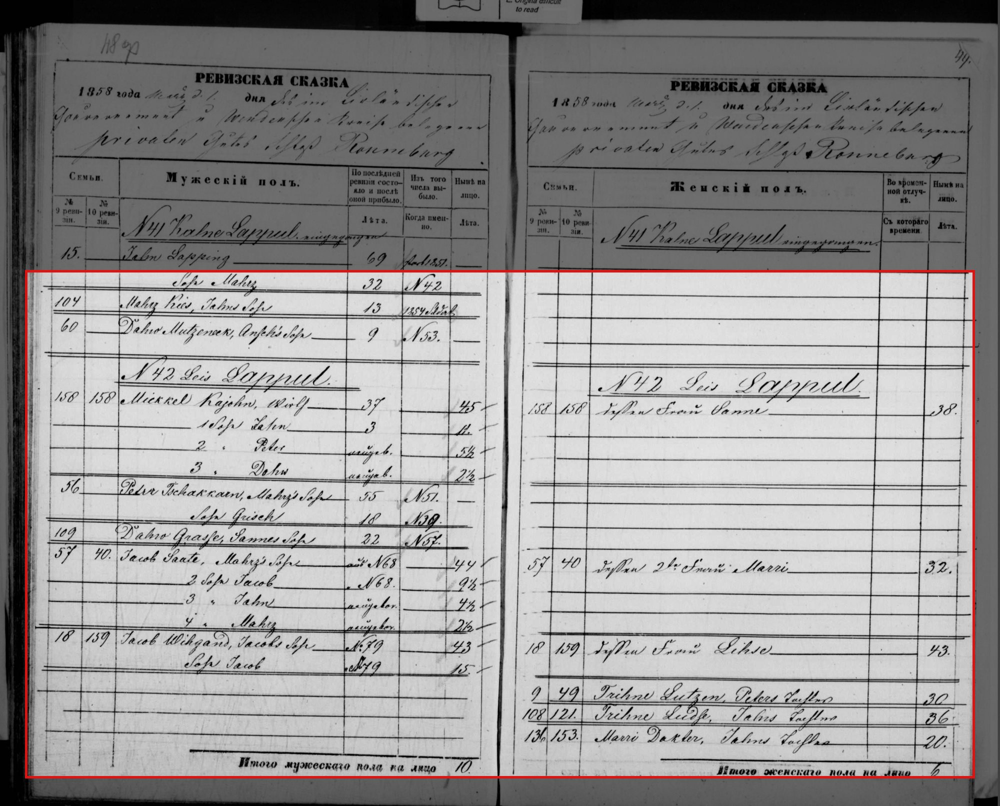

Rauna (Schloß Ronneburg) soul revision 1858, No. 107 Tehwenen Smukkul, family 94/184
The whole page of the record, with the part the source cites outlined in red and the rest dimmed; below each, a link to the untouched original.

The untouched original, full resolution (2720 × 2192 px, 407 KB).